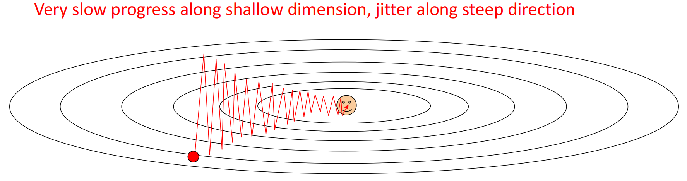
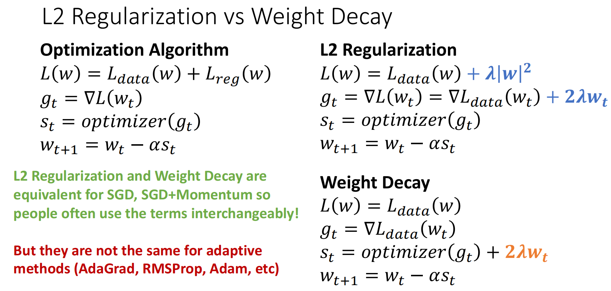

Regularization and Optimization
约 1565 个字 4 行代码 2 张图片 预计阅读时间 8 分钟
1. Regularization
一个模型在训练数据表现得很好而在未知数据表现得很差，这种现象称为过拟合．
为了防止模型出现过拟合，在数据集的损失函数后加上一个正则化项，其一般是关于模型复杂度的单调递增函数． $$ \displaystyle\frac{1}{N}\sum_{i=1}^NL_{i}(f(x_{i},W),y_{i})+\lambda R(W) $$
- \(\lambda\) 是衡量惩罚力度的超参数．
- \(R(W)\) 是正则化项．其可以为L1正则化 \(\|W\|\) 或L2正则化 \(\|W\|^2\)．
2. Optimization
我们已经用损失函数量化了参数的好坏，现在我们希望找到使 \(L(W)\) 最小的 \(W^{*}\)．
优化中常用的方法为Gradient Descent（梯度下降），即求出损失函数 \(L\) 关于 \(W\) 每一个参数的导数（即梯度，实际上是通过计算），将 \(W\) 的每个参数往负梯度方向进行变化．用代码来说就是
w = initialize_weights()
for t in range(num_steps):
dw = compute_gradient(loss_fn, data, w)
w -= learning_rate * dw
其中的超参数包含：
- 权重初始化方法
- 执行步数
- 学习率（即每一次走的步长）
不妨设目前的参数为 \(\theta\)（更常用），梯度为 \(g_t=\nabla_\theta L(\theta_t)\)，学习率为 \(\alpha\)，则最朴素的更新为
所有后文中介绍的基于梯度下降的优化方法都在解决两个问题：
- 每一次更新方向用什么量代替原始梯度 \(g_{t}\)
- 每一次走多大步
2.1 Batch Gradient Descent
每一次都用所有数据计算损失与梯度．
然后更新 \(\theta_{t+1}=\theta_t-\alpha \nabla L(\theta_t)\)．
优点是无采样噪声，缺点是每一步计算代价太高，且容易卡在鞍点处．
2.2 Stochastic Gradient Descent
随机梯度下降用部分数据来近似全数据期望，即
然后更新
由于是取部分数据，因此梯度会有噪声；好处是计算代价低，且由于每次选取的是不同的数据，不容易卡在鞍点处．
BGD和SGD有个共性的缺点：在某些方向变化太快、某些方向变化太慢时路径会抖动，例如

2.3 Momentum
为了解决路径抖动的问题，我们考虑使用历史梯度的加权平均数．更新的梯度的权重应该更大，而更旧的应该更小．
即
\(m_{t}\) 即为梯度的一阶指数加权平均．将 \(m_{t}\) 展开，得到
\(m_{0}\) 常被初始化为0，因此 \(m_{t}=(1-\beta)\sum_{i=1}^{t}\beta^{t-i}\theta_i\)．即为EMA（指数加权平均）．
其优点为：
- 降噪：由于SGD带有降噪，而EMA因为取平均值，可以平滑这些噪音．
- 抑制抖动：如果某个方向来回震荡，正负梯度会在平均中部分抵消．
2.4 Nesterov Momentum
Momentun有可能在接近最小值点时冲过头，这样还需要更多的步骤才能到达最小值．而Nesterov Momentum的思路是在Momentum的基础上，不在当前点 \(\theta_{t}\) 计算梯度，而是在走一步后到达的位置计算：
其相较于Momentum，加了一层前瞻修正．
2.5 AdaGrad
AdaGrad用于解决学习率调节的问题，其也被称为自适应学习率算法．定义梯度的二阶累积量 \(v_t=v_{t-1}+g_t^2\)（此处为张量的逐元素平方），更新：
其实 \(\epsilon\) 是一个极小的正数，用于防止除以0．
当梯度一直很大时，\(v_{t}\) 就会很大，此时就会自动调小学习率，即减小步长；反之如果梯度一直很小，其步长就会较大．
不过由于 \(v_{t}\) 是只增不减的，最后学习率可能衰减的太厉害．因此就出现了RMSProp．
2.6 RMSProp
RMSProp在AdaGrad基础上，将 \(v_{t}\) 从累计平方和改为了 \(g_{t}^{2}\) 的EMA：
这样的好处是学习率会自适应最近的梯度大小．如果最近的梯度大小很大，那么学习率就会较小；反之最近的梯度较小，那么学习率就会变大．
2.7 Adam
Adam是被广泛使用的梯度下降算法．其原文Adam: A Method for Stochastic Optimization被引用次数已经超过24w．其将Momentum与RMSProp进行了结合，并加以修正．
不妨设此时
观察到它们的权重和为 \((1-\beta)\sum_{i=1}^{t}\beta^{t-i}=1-\beta^{t}\)，其权重和小于1，在前几轮时得到的平均数会偏小，因此需要除以 \(1-\beta^{t}\) 对数据进行偏置矫正：
然后更新：
2.8 AdamW
AdamW是Adam+Weight Decay的优化．
Weight Decay
Weight Decay是在 \(g_{t}\) 里额外加上 \(2\lambda \theta_{t}\) 的惩罚项．这里与L2正则化做一个简单的对比：

L2正则化是在损失函数中添加 \(\lambda \theta_{t}^{2}\) 的惩罚；而Weight Decay是在更新量中额外加上 \(2\lambda \theta_{t}\)．在SGD/SGC+Momentum中，二者结果是一样的；而在Adam这类自适应优化器中，由于对学习率做了自适应，结果会不同．也就是说，我们使用Weight Decay而不是L2正则化，是因为我们不希望惩罚项被自适应机制一起处理．
加入了Weight Decat后：
得到的结果：
AdamW在Adam的基础上添加了防止过拟合的参数，因此可以将其当作默认优化方法．